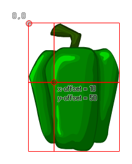

sprite_set_offset(ind, xoff, yoff);
| Argument | Description |
|---|---|
| ind | The index of the sprite to change the offset of. |
| xoff | The x position of the origin. |
| yoff | The y position of the origin. |
Returns : N/A
This function can be used to set the x and y origin of a sprite, and takes relative values based on the (0,0) position being the upper left corner of the sprite. The following image illustrates this:

NOTE: This function affects the sprite resource so that all further instances with this sprite will have the same offset.
sprite_assign(spr_Custom, spr_Base);
sprite_set_offset(spr_Custom, sprite_get_xoffset(spr_Base), sprite_get_yoffset(spr_Base));
The above code assigns the sprite indexed in "spr_Base" to the sprite indexed in "spr_Custom" and then uses the x and y offset values of "spr_Base" to set the new sprite's origin.